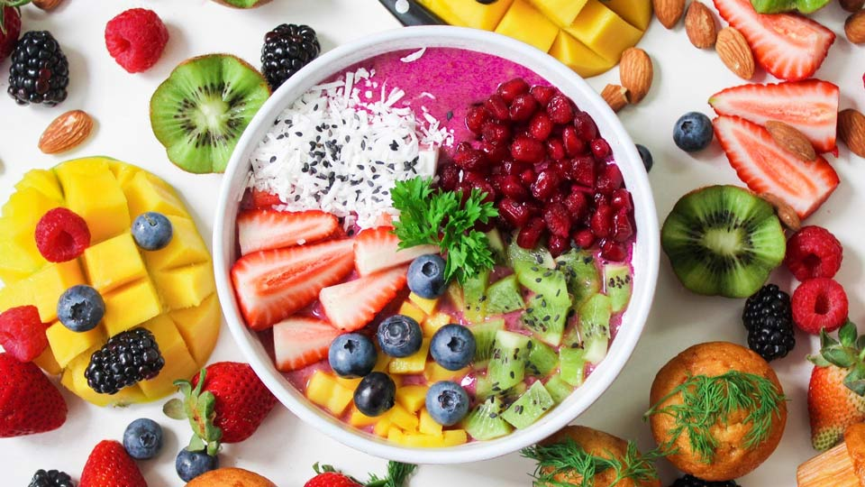

Food Inspiration
Houd jij nu ook zo veel van eten maar weet je niet waar je moet beginnen?
kijk dan hier voor de allerlekkerste recepten?
Recepten
- breakfast
Wil jij jouw dag goed en met veel energie beginnen?
Dan is een stevig ontbijt een must!!
- lunch
Als je een lekker middegmaal maakt heb je iets om naar uit te kijken tussen het werken door.
- dinner
Na een lange dag verdien je een lekker avondeten!

Pictures
Magic